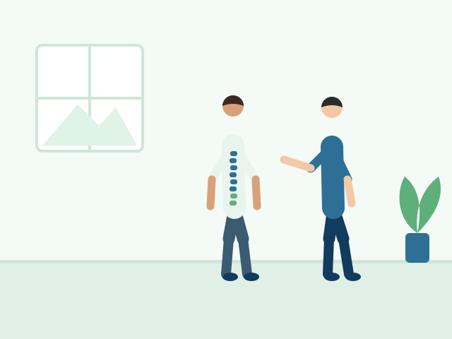

Spine, Neck & Back Pain
Physiotherapy for back, neck and posture-related concerns.
Back and neck problems often affect sitting, sleeping, working and walking. Physiotherapy looks at how you move and what may be adding strain.
How physiotherapy may help
- Assessment of posture and movement
- Exercises for the back, neck and core
- Advice on sitting, lifting and daily habits
- Guidance on when to seek further medical review
Severe or worsening pain, or new numbness or weakness, should be checked by a doctor promptly.
Treatment is personalized and results cannot be guaranteed.
